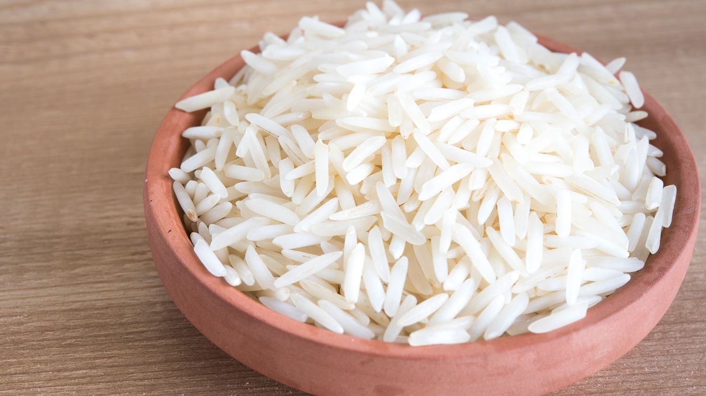
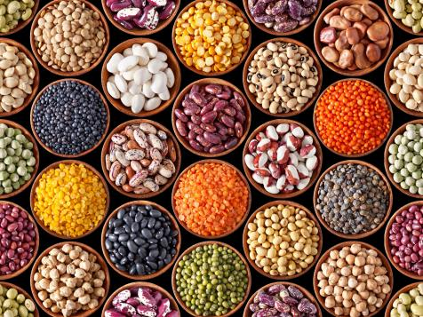

1. RICE / 1. चावल


Nutrients: Rice provides primarily carbohydrates and, in the case of brown rice, additional dietary
fiber, B vitamins, and minerals.
Market Share: Rice is a staple in Uttarakhand, mostly grown for local consumption with no significant
export market share.
Soil Type: Rice is cultivated in fertile, moisture-retentive alluvial soils in Uttarakhand.
Season: Rice is planted during the Kharif season, starting with the monsoon in June and harvested in
October or November.
Export within India: Rice from Uttarakhand is primarily consumed locally, with little to no export
outside the state.
पोषक तत्व: चावल मुख्य रूप से कार्बोहाइड्रेट प्रदान करता है और, भूरे चावल के मामले में, अतिरिक्त आहार
फाइबर, बी विटामिन और खनिज प्रदान करता है।
बाज़ार हिस्सेदारी: चावल उत्तराखंड का प्रमुख भोजन है, जो ज़्यादातर स्थानीय उपभोग के लिए उगाया जाता है,
जिसका निर्यात बाज़ार में कोई महत्वपूर्ण हिस्सा नहीं है।
मिट्टी का प्रकार: चावल की खेती उत्तराखंड में उपजाऊ, नमी धारण करने वाली जलोढ़ मिट्टी में की जाती है।
मौसम: चावल की बुआई ख़रीफ़ सीज़न के दौरान की जाती है, जो जून में मानसून के साथ शुरू होती है और अक्टूबर या
नवंबर में काटी जाती है।
भारत के भीतर निर्यात: उत्तराखंड से चावल मुख्य रूप से स्थानीय रूप से खाया जाता है, राज्य के बाहर निर्यात
बहुत कम या कोई नहीं होता है।
2. WHEAT / 2. गेहूँ


Nutrients: Wheat is rich in carbohydrates, protein, dietary fiber, and contains essential B vitamins and
minerals such as iron.
Market Share: Wheat is a major crop in Uttarakhand, primarily aimed at satisfying local consumption
rather than large-scale export.
Soil Type: Wheat in Uttarakhand thrives in well-drained loamy soils which are prevalent in the plains
and lower hill regions.
Season: Wheat is typically grown during the Rabi season, with sowing in late October to December and
harvesting in March or April.
Export within India: Most wheat produced in Uttarakhand is used to meet the demand within the state,
with minimal distribution to other states.
पोषक तत्व: गेहूं कार्बोहाइड्रेट, प्रोटीन, आहार फाइबर से भरपूर होता है और इसमें आवश्यक बी विटामिन और आयरन
जैसे खनिज होते हैं।
बाज़ार हिस्सेदारी: उत्तराखंड में गेहूं एक प्रमुख फसल है, जिसका मुख्य उद्देश्य बड़े पैमाने पर निर्यात के
बजाय स्थानीय खपत को संतुष्ट करना है।
मिट्टी का प्रकार: उत्तराखंड में गेहूं अच्छी जल निकासी वाली दोमट मिट्टी में पनपता है जो मैदानी और निचले
पहाड़ी क्षेत्रों में प्रचलित है।
मौसम: गेहूं आम तौर पर रबी मौसम के दौरान उगाया जाता है, जिसकी बुआई अक्टूबर के अंत से दिसंबर में और कटाई
मार्च या अप्रैल में होती है।
भारत के भीतर निर्यात: उत्तराखंड में उत्पादित अधिकांश गेहूं का उपयोग राज्य के भीतर मांग को पूरा करने के
लिए किया जाता है, अन्य राज्यों में न्यूनतम वितरण के साथ।
3. Maize / 3. रमक्का

Nutrients: Maize is high in carbohydrates, provides essential vitamins like B vitamins, and minerals
such as phosphorus and magnesium.
Market Share: Maize is a significant crop in Uttarakhand, largely consumed locally with limited
commercial export.
Soil Type: Maize grows well in the sandy loam soils found in Uttarakhand, which allow good drainage and
retain sufficient moisture.
Season: Maize is planted primarily in the Kharif season from June to July and harvested from September
to October.
Export within India: The maize produced in Uttarakhand predominantly serves local markets, with very
little being sent to other states.
पोषक तत्व: मक्का कार्बोहाइड्रेट में उच्च है, बी विटामिन जैसे आवश्यक विटामिन और फॉस्फोरस और मैग्नीशियम
जैसे खनिज प्रदान करता है।
बाज़ार हिस्सेदारी: उत्तराखंड में मक्का एक महत्वपूर्ण फसल है, जिसका वाणिज्यिक निर्यात सीमित होने के कारण
बड़े पैमाने पर स्थानीय स्तर पर खपत होती है।
मिट्टी का प्रकार: मक्का उत्तराखंड में पाई जाने वाली रेतीली दोमट मिट्टी में अच्छी तरह से उगती है, जो
अच्छी जल निकासी की अनुमति देती है और पर्याप्त नमी बनाए रखती है।
मौसम: मक्का मुख्य रूप से जून से जुलाई तक ख़रीफ़ मौसम में लगाया जाता है और सितंबर से अक्टूबर तक काटा जाता
है।
भारत के भीतर निर्यात: उत्तराखंड में उत्पादित मक्का मुख्य रूप से स्थानीय बाजारों में काम करता है, अन्य
राज्यों में बहुत कम भेजा जाता है।
4. BARLEY / 4. जौ
Nutrients: Barley is rich in carbohydrates, fiber, and contains important nutrients such as selenium, B
vitamins, and minerals like magnesium.
Market Share: Barley is an important crop in Uttarakhand, mostly used locally and not extensively
marketed outside the state.
Soil Type: Barley thrives in well-drained, loamy to sandy loam soils in the colder, higher altitudes of
Uttarakhand.
Season: Barley is primarily grown during the Rabi season, with sowing in late October and harvesting by
early summer.
Export within India: Most barley grown in Uttarakhand is consumed within the state, with minimal export
to other regions.
पोषक तत्व: जौ कार्बोहाइड्रेट, फाइबर से भरपूर होता है और इसमें सेलेनियम, बी विटामिन और मैग्नीशियम जैसे
खनिज जैसे महत्वपूर्ण पोषक तत्व होते हैं।
बाज़ार हिस्सेदारी: जौ उत्तराखंड की एक महत्वपूर्ण फसल है, जिसका ज्यादातर उपयोग स्थानीय स्तर पर किया जाता
है और राज्य के बाहर बड़े पैमाने पर इसका विपणन नहीं किया जाता है।
मिट्टी का प्रकार: जौ उत्तराखंड के ठंडे, अधिक ऊंचाई वाले इलाकों में अच्छी जल निकासी वाली, दोमट से लेकर
रेतीली दोमट मिट्टी में उगता है।
मौसम: जौ मुख्य रूप से रबी मौसम के दौरान उगाया जाता है, जिसकी बुआई अक्टूबर के अंत में होती है और कटाई
गर्मियों की शुरुआत में होती है।
भारत के भीतर निर्यात: उत्तराखंड में उगाई जाने वाली अधिकांश जौ की खपत राज्य के भीतर ही हो जाती है, अन्य
क्षेत्रों में न्यूनतम निर्यात होता है।
5. Millets / 5. बाजरा

Nutrients: Millets are rich in nutrients including protein, dietary fiber, B vitamins, and essential
minerals like iron, magnesium, and phosphorus.
Market Share: Millets, particularly finger millet (ragi) and barnyard millet (jhangora), play a crucial
role in local diets and are primarily cultivated for local consumption.
Soil Type: Millets are adaptable and can thrive in less fertile, sandy to loamy soils, making them
suitable for the diverse terrains of Uttarakhand.
Season: Millets are usually grown during the Kharif season, planted with the onset of monsoon rains in
June and harvested by October.
Export within India: Millet production in Uttarakhand mainly serves the local markets, with little to no
export outside the state.
पोषक तत्व: बाजरा प्रोटीन, आहार फाइबर, विटामिन बी और आयरन, मैग्नीशियम और फास्फोरस जैसे आवश्यक खनिजों सहित
पोषक तत्वों से भरपूर है।
बाजार हिस्सेदारी: बाजरा, विशेष रूप से फिंगर बाजरा (रागी) और बार्नयार्ड बाजरा (झंगोरा), स्थानीय आहार में
महत्वपूर्ण भूमिका निभाते हैं और मुख्य रूप से स्थानीय खपत के लिए खेती की जाती है।
मिट्टी का प्रकार: बाजरा अनुकूलनीय है और कम उपजाऊ, रेतीली से दोमट मिट्टी में पनप सकता है, जो उन्हें
उत्तराखंड के विविध इलाकों के लिए उपयुक्त बनाता है।
मौसम: बाजरा आम तौर पर ख़रीफ़ सीज़न के दौरान उगाया जाता है, जून में मानसून की बारिश की शुरुआत के साथ बोया
जाता है और अक्टूबर तक काटा जाता है।
भारत के भीतर निर्यात: उत्तराखंड में बाजरा उत्पादन मुख्य रूप से स्थानीय बाजारों में होता है, राज्य के
बाहर निर्यात न के बराबर होता है।
6. PLUSES / 6. प्लस

Nutrients: Pulses are rich sources of protein, dietary fiber, vitamins, and minerals such as iron and
potassium, contributing to a balanced diet.
Market Share: Pulses are essential crops in Uttarakhand, fulfilling local dietary needs primarily and
having limited commercial export.
Soil Type: Pulses thrive in well-drained, fertile soils such as loamy and sandy loam, prevalent in
various regions of Uttarakhand.
Season: Pulses are cultivated both in the Kharif and Rabi seasons, with specific varieties planted
during each season depending on local climatic conditions.
Export within India: Most pulses grown in Uttarakhand are consumed within the state or nearby regions,
with minimal export to other states.
पोषक तत्व: दालें प्रोटीन, आहार फाइबर, विटामिन और आयरन और पोटेशियम जैसे खनिजों के समृद्ध स्रोत हैं, जो
संतुलित आहार में योगदान करते हैं।
बाजार हिस्सेदारी: दलहन उत्तराखंड में आवश्यक फसलें हैं, जो मुख्य रूप से स्थानीय आहार संबंधी जरूरतों को
पूरा करती हैं और इनका वाणिज्यिक निर्यात सीमित है।
मिट्टी का प्रकार: दलहनें उत्तराखंड के विभिन्न क्षेत्रों में प्रचलित दोमट और रेतीली दोमट जैसी अच्छी जल
निकासी वाली, उपजाऊ मिट्टी में पनपती हैं।
मौसम: दलहन की खेती ख़रीफ़ और रबी दोनों मौसमों में की जाती है, स्थानीय जलवायु परिस्थितियों के आधार पर
प्रत्येक मौसम के दौरान विशिष्ट किस्मों को लगाया जाता है।
भारत के भीतर निर्यात: उत्तराखंड में उगाई जाने वाली अधिकांश दालें राज्य या आस-पास के क्षेत्रों में खपत की
जाती हैं, अन्य राज्यों में न्यूनतम निर्यात होता है।
7. OILSEEDS / 7. तिलहन
Nutrients: Oilseeds provide essential fatty acids, protein, fiber, and vitamins, contributing to a
balanced diet and supporting various bodily functions.
Market Share: Oilseeds cultivation in Uttarakhand caters primarily to local demand, with limited
commercial export outside the state.
Soil Type: Oilseeds typically thrive in well-drained soils with adequate moisture, such as loamy and
sandy loam soils found in different regions of Uttarakhand.
Season: Oilseeds are cultivated in both Kharif and Rabi seasons, with specific varieties suited to each
season's climatic conditions.
Export within India: Most oilseeds produced in Uttarakhand are utilized within the state or nearby
regions, with minimal export to other states.
पोषक तत्व: तिलहन आवश्यक फैटी एसिड, प्रोटीन, फाइबर और विटामिन प्रदान करते हैं, संतुलित आहार में योगदान
करते हैं और विभिन्न शारीरिक कार्यों का समर्थन करते हैं।
बाज़ार हिस्सेदारी: उत्तराखंड में तिलहन की खेती मुख्य रूप से स्थानीय मांग को पूरा करती है, राज्य के बाहर
सीमित वाणिज्यिक निर्यात के साथ।
मिट्टी का प्रकार: तिलहन आमतौर पर पर्याप्त नमी वाली अच्छी जल निकासी वाली मिट्टी में पनपते हैं, जैसे कि
उत्तराखंड के विभिन्न क्षेत्रों में पाई जाने वाली दोमट और रेतीली दोमट मिट्टी।
मौसम: तिलहन की खेती ख़रीफ़ और रबी दोनों मौसमों में की जाती है, प्रत्येक मौसम की जलवायु परिस्थितियों के
अनुकूल विशिष्ट किस्में होती हैं।
भारत के भीतर निर्यात: उत्तराखंड में उत्पादित अधिकांश तिलहनों का उपयोग राज्य या आस-पास के क्षेत्रों में
किया जाता है, अन्य राज्यों में न्यूनतम निर्यात होता है।
8. SUGARCANE 8. गन्ना


Nutrients: Sugarcane provides energy in the form of carbohydrates and contains small amounts of fiber
and vitamins such as vitamin C and B vitamins.
Market Share: Sugarcane cultivation in Uttarakhand is significant for meeting local demands, primarily
for sugar production, with limited export.
Soil Type: Sugarcane thrives in fertile, well-drained soils with good moisture retention, such as loamy
and clayey soils found in various regions of Uttarakhand.
Season: Sugarcane is typically planted during the pre-monsoon period from February to April and
harvested from October to March, aligning with the state's climatic conditions.
Export within India: Sugarcane production in Uttarakhand is primarily utilized within the state or
nearby regions, with minimal export to other states.
पोषक तत्व: गन्ना कार्बोहाइड्रेट के रूप में ऊर्जा प्रदान करता है और इसमें थोड़ी मात्रा में फाइबर और
विटामिन सी और बी विटामिन जैसे विटामिन होते हैं।
बाजार हिस्सेदारी: उत्तराखंड में गन्ने की खेती स्थानीय मांगों को पूरा करने के लिए महत्वपूर्ण है, मुख्य
रूप से सीमित निर्यात के साथ चीनी उत्पादन के लिए।
मिट्टी का प्रकार: गन्ना अच्छी नमी बनाए रखने वाली उपजाऊ, अच्छी जल निकासी वाली मिट्टी में पनपता है, जैसे
कि उत्तराखंड के विभिन्न क्षेत्रों में पाई जाने वाली दोमट और चिकनी मिट्टी।
मौसम: गन्ना आम तौर पर फरवरी से अप्रैल तक प्री-मानसून अवधि के दौरान लगाया जाता है और राज्य की जलवायु
परिस्थितियों के अनुरूप अक्टूबर से मार्च तक काटा जाता है।
भारत के भीतर निर्यात: उत्तराखंड में गन्ने का उत्पादन मुख्य रूप से राज्य या आस-पास के क्षेत्रों में किया
जाता है, अन्य राज्यों में न्यूनतम निर्यात होता है।